What the orbit software shows
Native GMAT lunar coast study
GMAT R2026a integrates 18 prescribed lunar cases at one TAI epoch and two MJ2000Eq planes. Of twelve requested 180-day coasts, seven reach the 1,737.4 km reference sphere and five reach 180 days. Six additional high-degree or alternative-field cases reach 30 days.
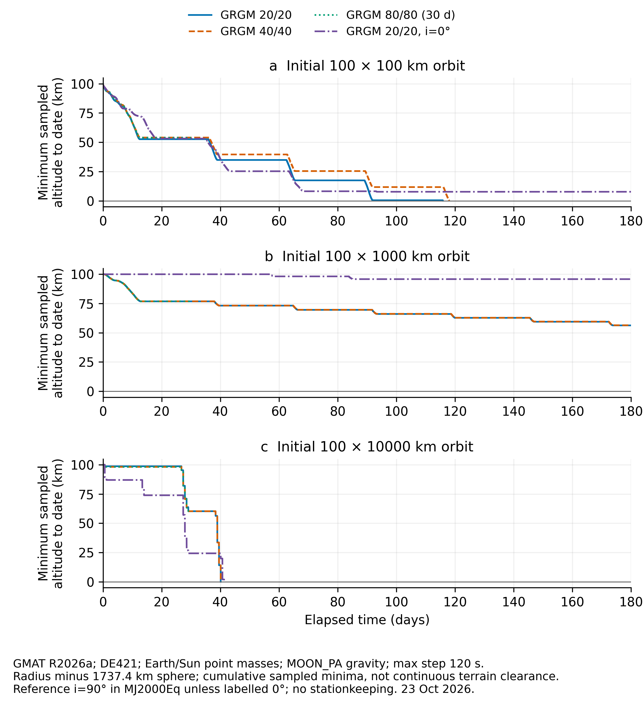
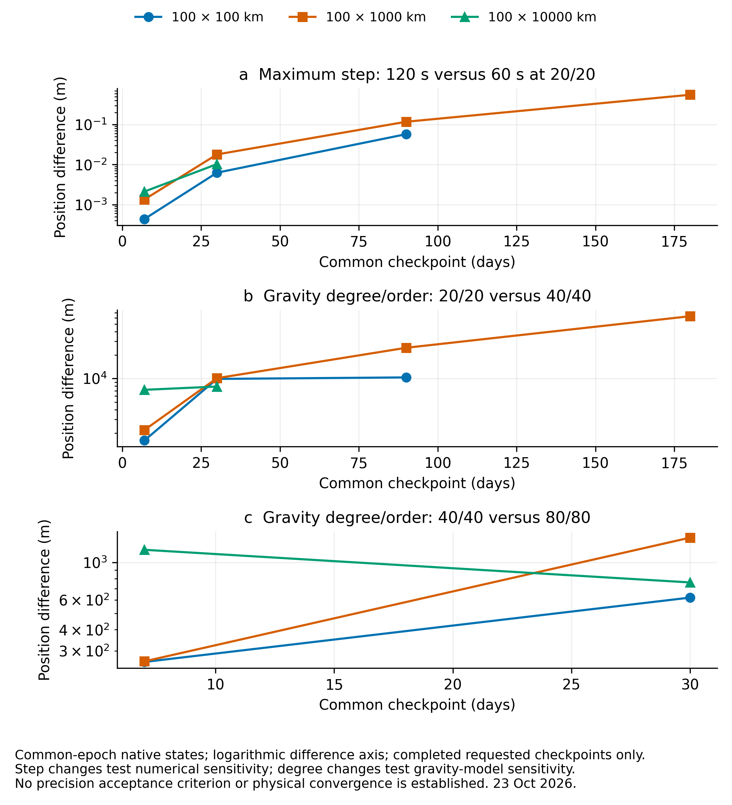
Native decks, lossless raw histories, source identities, report and capture checker.
A 4 kg payload, a 300 kg remaining host and a 450 km circular reference. These runs test prescribed release states and numerical propagation. They do not demonstrate a working launcher.
Executed: Orekit 13.1.6 and GMAT R2026a. 19 October follow-up: the dominant J2 pole/gravity mismatch is isolated below. Atmospheric lifetime, physical release accuracy and full flight-clearance validation remain open.
Open the interactive common-epoch explorer — play or step through the computed history.
Release changes the orbit and the relative motion
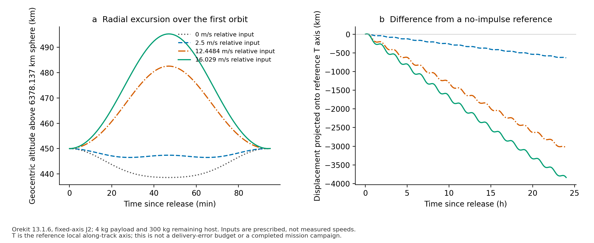
Compare the setups before comparing the answers
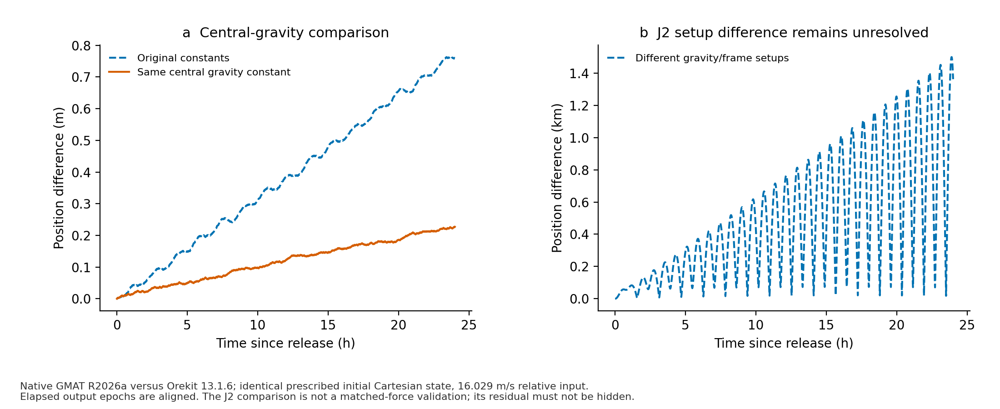
Matched gravity-axis follow-up
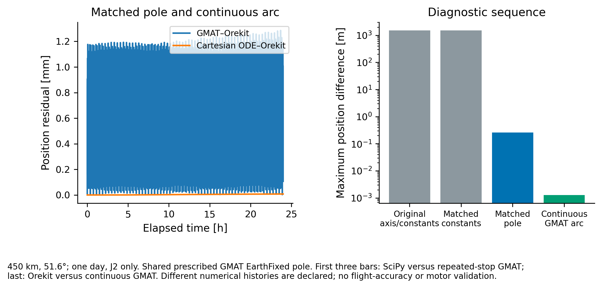
Native inputs, raw histories, independent Cartesian calculation, refinement and PDF report.
Numerical consistency has a limited meaning
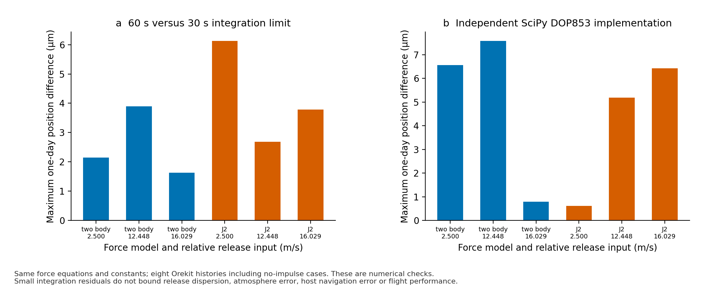
The archived campaign has a different boundary
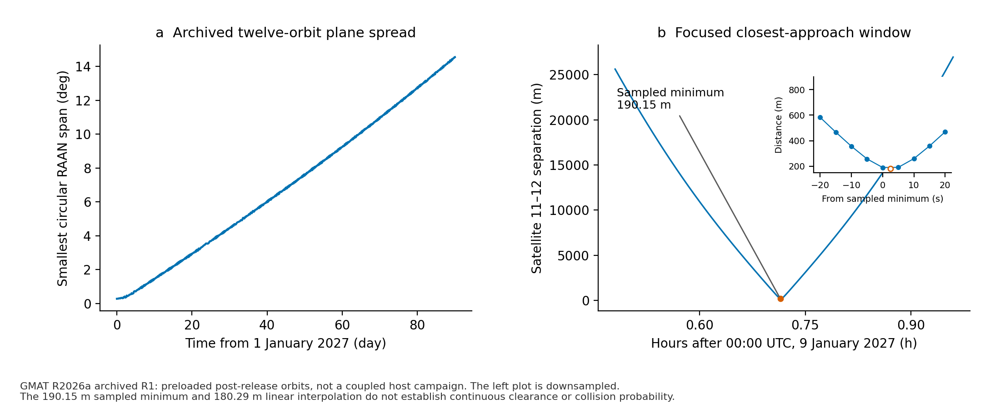
Coupled four/twelve-payload follow-up
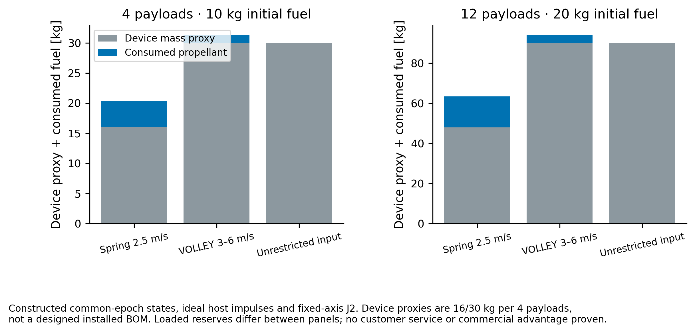
Raw campaigns, resource countercases and conditional nominal-clearance method. Feeder CAD and mechanical evidence.
Inspect the evidence
Source, raw histories, result tables and five-page PDF. The same evidence is local to the thesis and paper repositories. Plots are numerical exports; none is presented as a graphical-application screenshot.
CNR-01: complete native campaign replay and precision budgets
51 native Orekit cases replay prescribed host burns, rocket mass loss and parent/child recoil from one initial host state. Nominal payload endpoint differences are below 8 µm; this verifies numerical consistency, not physical delivery precision. Commands and constructed targets are shared with the source calculation. Both implementations use DOP853.
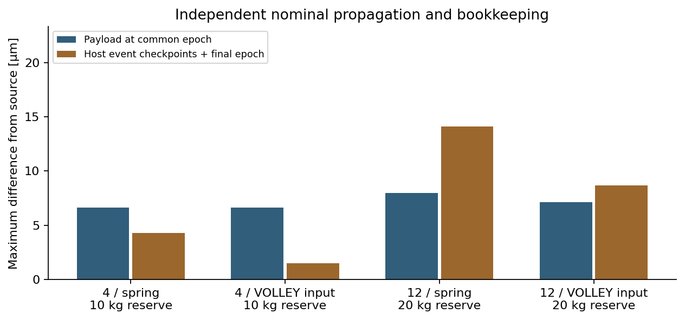
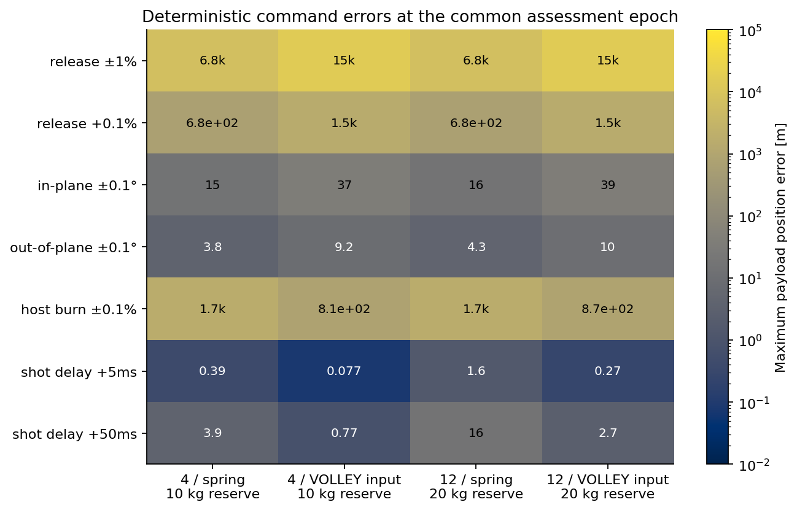
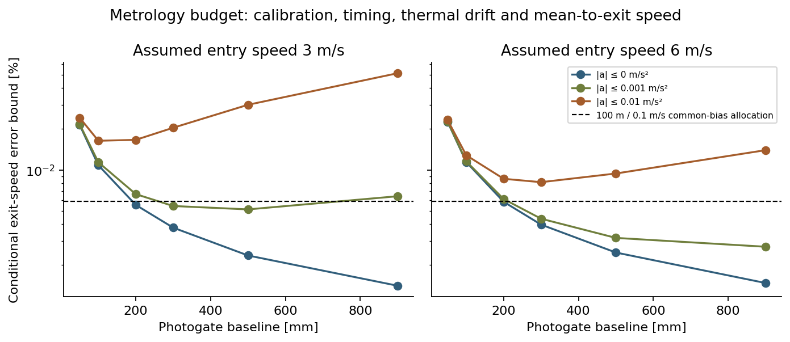
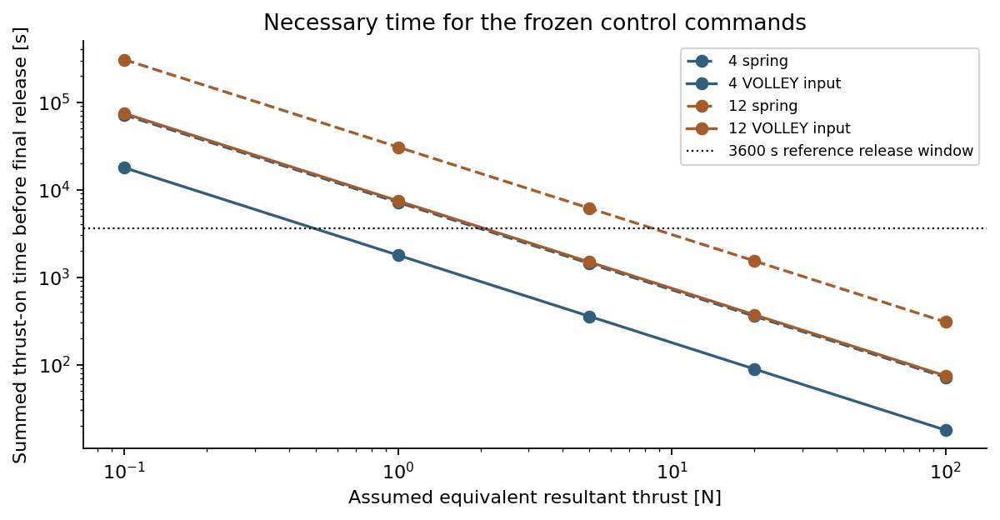
Self-contained PDF, source, raw events, native logs, sensitivity cases and dependency hashes. Actual motor/source ratings, closed-loop delivery, installed integration and provider acceptance remain unresolved.
FBR-01: finite-duration host targeting
18 targeted schedules and 46 native Orekit runs replace ideal host impulses with finite resultant-force windows, mass flow, preparation and recovery. Shared targets are assessed at one common epoch. No rated release speed or host compatibility is inferred.
At the 35%/35% policy, twelve spring inputs need 33.83 N peak and 23.12 kg fuel; imposed VOLLEY inputs need 18.00 N and 6.12 kg. A common 30 kg reserve and 100 N limit lets both reach the constructed translational targets. The added VOLLEY mass proxy still exceeds its fuel saving.
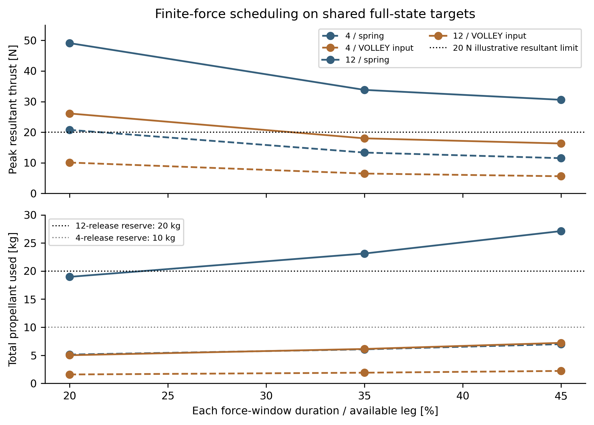
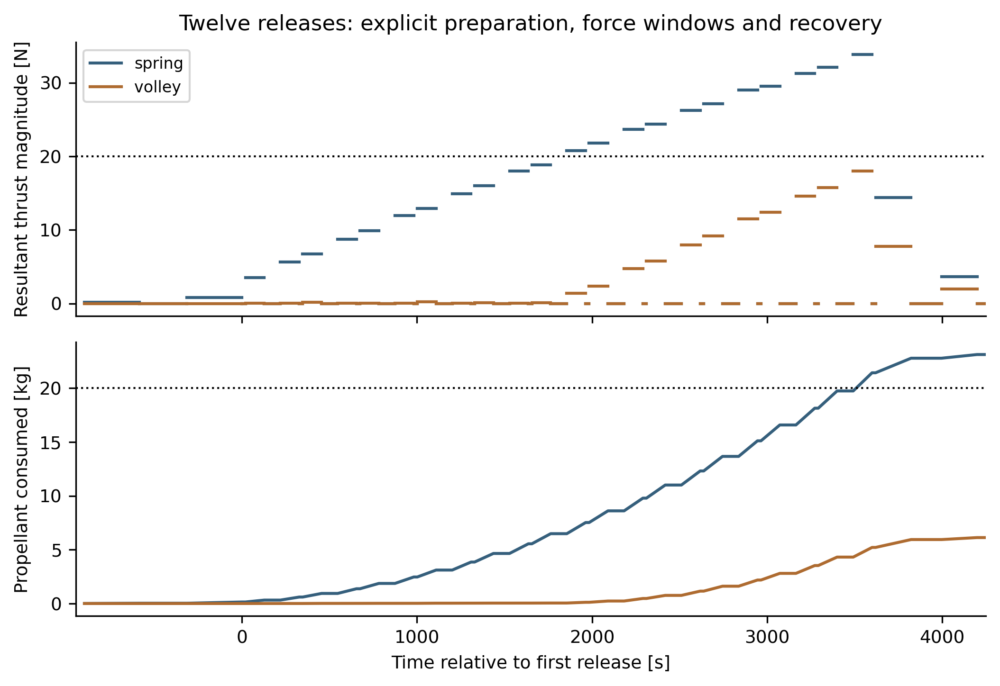
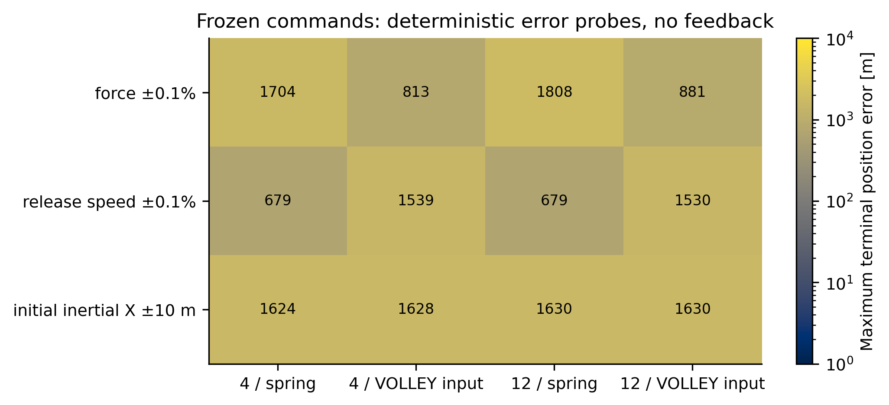
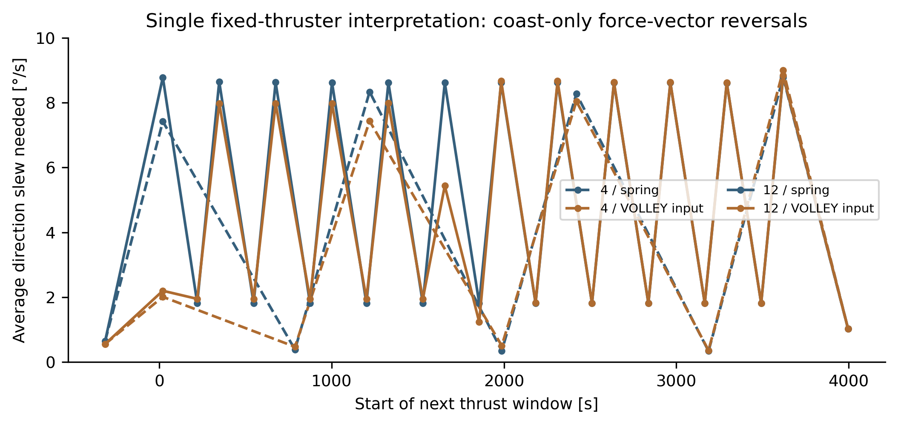
Self-contained report, Python/Java sources, raw commands, genuine native logs and exact dependency hashes. Host pointing/force allocation, plume/body clearance, navigation feedback, actual installed hardware and motor ratings remain unverified.